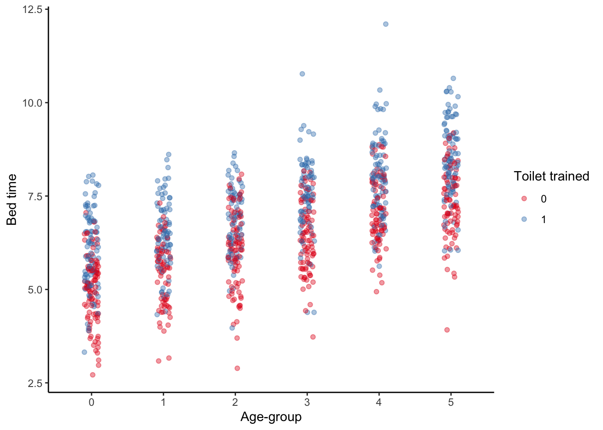
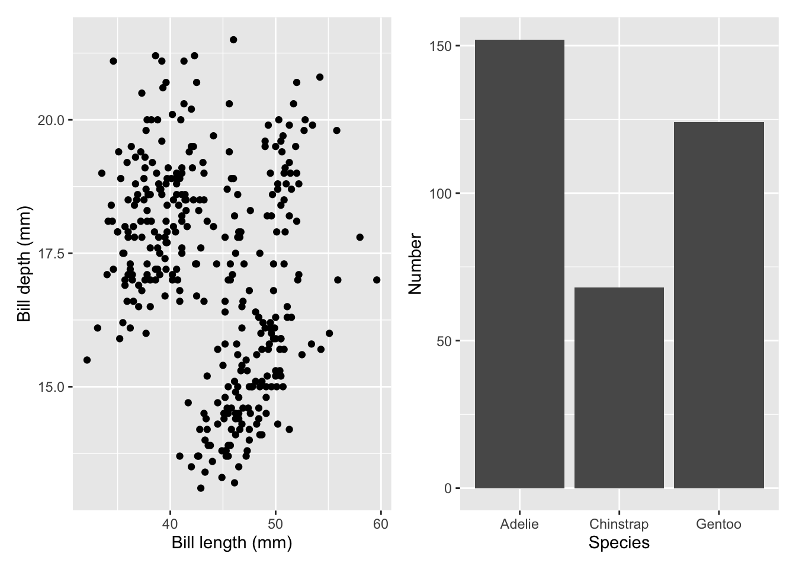
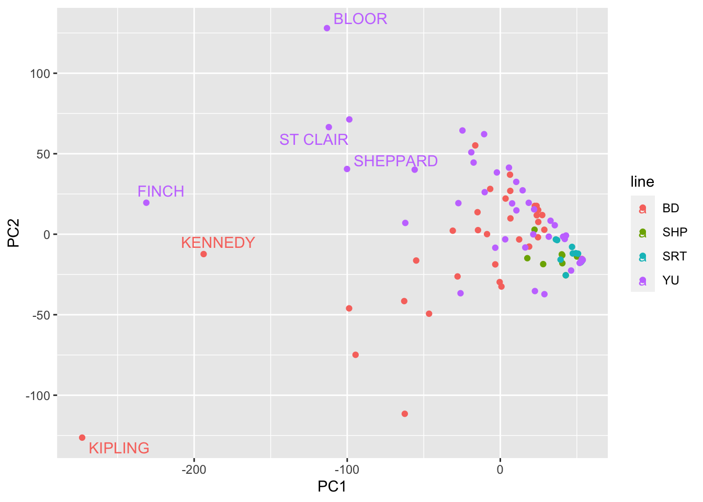

Chapter 16 Multilevel regression with post-stratification
Last updated: 28 April 2021.
Required reading
- Alexander, Monica, 2019, ‘Analyzing name changes after marriage using a non-representative survey,’ 7 August, https://www.monicaalexander.com/posts/2019-08-07-mrp/.
- Gelman, Andrew, Jennifer Hill and Aki Vehtari, 2020, Regression and Other Stories, Cambridge University Press, Chapter 17.
- Hanretty, Chris, 2019, ‘An introduction to multilevel regression and post-stratification for estimating constituency opinion,’ Political Studies Review, https://doi.org/10.1177/1478929919864773.
- Kastellec, Jonathan, Jeffrey Lax, and Justin Phillips, 2016, ‘Estimating State Public Opinion With Multi-Level Regression and Poststratification using R,’ https://scholar.princeton.edu/sites/default/files/jkastellec/files/mrp_primer.pdf.
- Kennedy, Lauren, Katharine Khanna, Daniel Simpson, and Andrew Gelman, 2020, ‘Using sex and gender in survey adjustment,’ https://arxiv.org/abs/2009.14401.
- Kennedy, Lauren, and Jonah Gabry, 2019, ‘MRP with rstanarm,’ rstanarm vignettes, 8 October, https://mc-stan.org/rstanarm/articles/mrp.html.
- Kennedy, Lauren, and Andrew Gelman, 2019, ‘Know your population and know your model: Using model-based regression and poststratification to generalize findings beyond the observed sample,’ https://arxiv.org/abs/1906.11323.
- Wang, Wei, David Rothschild, Sharad Goel, and Andrew Gelman, 2015, ‘Forecasting elections with non-representative polls,’ International Journal of Forecasting, 31, no. 3, pages 980-991.
- Wu, Changbao and Mary E. Thompson, 2020, Sampling Theory and Practice, Springer, Chapter 17.
Required viewing
- Gelman, Andrew, 2020, ‘Statistical Models of Election Outcomes,’ CPSR Summer Program in Quantitative Methods of Social Research, https://youtu.be/7gjDnrbLQ4k.
Required listening
- Galef, Julia, 2020, ‘Episode 248: Are Democrats being irrational? (David Shor),’ Rationally Speaking, available at: http://rationallyspeakingpodcast.org/show/episode-248-are-democrats-being-irrational-david-shor.html.
Recommended reading
- Arnold, Jeffrey B., 2018, ‘Simon Jackman’s Bayesian Model Examples in Stan,’ Ch 13, 7 May, https://jrnold.github.io/bugs-examples-in-stan/campaign.html.
- Cohn, Nate, 2016, ‘We Gave Four Good Pollsters the Same Raw Data. They Had Four Different Results,’ The New York Times, The Upshot, 20 September, https://www.nytimes.com/interactive/2016/09/20/upshot/the-error-the-polling-world-rarely-talks-about.html.
- Edelman, M., Vittert, L., & Meng, X.-L., 2021, ‘An Interview with Murray Edelman on the History of the Exit Poll,’ Harvard Data Science Review, https://doi.org/10.1162/99608f92.3a25cd24 https://hdsr.mitpress.mit.edu/pub/fekmqbv4/release/2.
- Gelman, Andrew, and Julia Azari, 2017, ‘19 things we learned from the 2016 election,’ Statistics and Public Policy, 4 (1), pp. 1-10.
- Gelman, Andrew, Jessica Hullman, and Christopher Wlezien, 2020, ‘Information, incentives, and goals in election forecasts,’ 8 September, available at: http://www.stat.columbia.edu/~gelman/research/unpublished/forecast_incentives3.pdf
- Gelman, Andrew, Merlin Heidemanns, and Elliott Morris, 2020, ‘2020 US POTUS model,’ The Economist, freely available: https://github.com/TheEconomist/us-potus-model.
- Ghitza, Yair, and Andrew Gelman, 2013, ‘Deep Interactions with MRP: Election Turnout and Voting Patterns Among Small Electoral Subgroups,’ American Journal of Political Science, 57 (3), pp. 762-776.
- Ghitza, Yair, and Andrew Gelman, 2020, ‘Voter Registration Databases and MRP: Toward the Use of Large-Scale Databases in Public Opinion Research,’ Political Analysis, pp. 1-25.
- Imai, Kosuke, 2017, Quantitative Social Science: An Introduction, Princeton University Press, Ch 4.1, and 5.3.
- Jackman, Simon, 2005, ‘Pooling the polls over an election campaign,’ Australian Journal of Political Science, 40 (4), pp. 499-517.
- Jackman, Simon, Shaun Ratcliff and Luke Mansillo, 2019, ‘Small area estimates of public opinion: Model-assisted post-stratification of data from voter advice applications,’ 4 January, https://www.cambridge.org/core/membership/services/aop-file-manager/file/5c2f6ebb7cf9ee1118d11c0a/APMM-2019-Simon-Jackman.pdf.
- Lauderdale, Ben, Delia Bailey, Jack Blumenau, and Doug Rivers, 2020, ‘Model-based pre-election polling for national and sub-national outcomes in the US and UK,’ International Journal of Forecasting, 36 (2), pp. 399-413.
- Leigh, Andrew, and Justin Wolfers, 2006, ‘Competing approaches to forecasting elections: Economic models, opinion polling and prediction markets,’ Economic Record, 82 (258), pp.325-340.
- Nickerson, David W., and Todd Rogers, 2014, ‘Political campaigns and big data,’ Journal of Economic Perspectives, 28 (2), pp. 51-74.
- Shirani-Mehr, Houshmand, David Rothschild, Sharad Goel, and Andrew Gelman, 2018, ‘Disentangling bias and variance in election polls,’ Journal of the American Statistical Association, 113 (522), pp. 607-614.
Recommended viewing
- Jackman, Simon, 2020, ‘The triumph of the quants?: Model-based poll aggregation for election forecasting,’ Ihaka Lecture Series, https://youtu.be/MvGYsKIsLFs.
Key libraries
brmsbroomgtsummaryhavenlabelledlme4modelsummaryrstanarmtidybayestidyverse
Quiz
- Your Mum asked you what you’ve been learning this term. You decide to tell her about multilevel regression with post-stratification (MRP). Please explain what MRP is. Your Mum has a university-education, but has not necessarily taken any statistics, so you will need to explain any technical terms that you use. [Please write two or three paragraphs; strong answers would be clear about both strengths and weaknesses.]
- With respect to Wang et al. (2015): Why is this paper interesting? What do you like about this paper? What do you wish it did better? To what extent can you reproduce this paper? [Please write one or two paragraphs about each aspect.]
- With respect to Wang et al. (2015), what is not a feature they mention election forecasts need?
- Explainable.
- Accurate.
- Cost-effective.
- Relevant.
- Timely.
- With respect to Wang et al. (2015), what is a weakness of MRP?
- Detailed data requirement.
- Allows use of biased data.
- Expensive to conduct.
- With respect to Wang et al. (2015), what is concerning about the Xbox sample?
- Non-representative.
- Small sample size.
- Multiple responses from the same respondent.
- I am interested in studying how voting intentions in the 2020 US presidential election vary by an individual’s income. I set up a logistic regression model to study this relationship. In my study, some possible independent variables would be: [Please check all that apply.]
- Whether the respondent is registered to vote (yes/no).
- Whether the respondent is going to vote for Biden (yes/no).
- The race of the respondent (white/not white).
- The respondent’s marital status (married/not).
- Please think about Cohn (2016) Why is this type of exercise not carried out more? Why do you think that different groups, even with the same background and level of quantitative sophistication, could have such different estimates even when they use the same data? [Please write a paragraph or two about each aspect.]
- When we think about multilevel regression with post-stratification, what are the key assumptions that we are making? [Please write one or two paragraphs about each aspect.]
- I train a model based on a survey, and then post-stratify it using the 2020 ACS dataset. What are some of the practical considerations that I may have to contend when I am doing this? [Please write a paragraph each about at least three considerations.]
- In a similar manner to Ghitza and Gelman (2020) pretend you’ve got access to a US voter file record from a private company. You train a model on the 2020 US CCES, and post-stratify it, on an individual-basis, based on that voter file.
- Could you please put-together a datasheet for the voter file dataset following Gebru et al. (2020)? As a reminder, datasheets accompany datasets and document ‘motivation, composition, collection process, recommended uses,’ among other aspects.
- Could you also please put together a model card for your model, following Mitchell et al. (2019)? As a reminder, model cards are deliberately straight-forward one- or two-page documents that report aspects such as: model details; intended use; metrics; training data; ethical considerations; as well as caveats and recommendations (Mitchell et al. 2019).
- Could you please discuss three ethical aspects around the features that you are using in your model? [Please write a paragraph or two for each point.]
- Could you please detail the protections that you would put in place in terms of the dataset, the model, and the predictions?
- If I have a model output from
lm()called ‘my_model_output’ how can I usemodelsummaryto display the output (assume the package has been loaded) [please select all that apply]?modelsummary::modelsummary(my_model_output)modelsummary(my_model_output)my_model_output %>% modelsummary()my_model_output %>% modelsummary(statistic = NULL)
- Which of the following are examples of linear models [please select all that apply]?
lm(y ~ x_1 + x_2 + x_3, data = my_data)lm(y ~ x_1 + x_2^2 + x_3, data = my_data)lm(y ~ x_1 * x_2 + x_3, data = my_data)lm(y ~ x_1 + x_1^2 + x_2 + x_3, data = my_data)
- Consider a situation in which you have a survey dataset with these age-groups: 18-29; 30-44; 45- 60; and 60+. And a post-stratification dataset with these age-groups: 18-24; 25-29; 30-34; 35-39; 40-44; 45-49; 50-54; 55-59; and 60+. What approach would you take to bringing these together? [Please write a paragraph.]
- Consider a situation in which you again have a survey dataset with these age-groups: 18-29; 30-44; 45- 60; and 60+. But this time the post-stratification dataset has these age-groups: 18-34; 35-49; 50-64; and 65+. What approach would you take to bringing these together? [Please write a paragraph.]
- Please consider Kennedy et al. (2020). What are some statistical facets when considering a survey focused on gender, with a post-stratification survey that is not? [Please check all that apply.]
- Impute all non-male as female
- Estimate gender using auxiliary information
- Impute population
- Impute sample values
- Model population distribution using auxiliary data
- Remove all non-binary respondents
- Remove respondents
- Assume population distribution
- Please consider Kennedy et al. (2020). What are some ethical facets when considering a survey focused on gender, with a post-stratification survey that is not? [Please check all that apply.]
- Impute all non-male as female
- Estimate gender using auxiliary information
- Impute population
- Impute sample values
- Model population distribution using auxiliary data
- Remove all non-binary respondents
- Remove respondents
- Assume population distribution
- Please consider Kennedy et al. (2020). How do they define ethics?
- Respecting the perspectives and dignity of individual survey respondents.
- Generating estimates of the general population and for subpopulations of interest.
- Using more complicated procedures only when they serve some useful function.
16.1 Introduction
[The Presidential election of] 2016 was the largest analytics failure in US political history.
David Shor, 13 August 2020
Multilevel regression with post-stratification (MRP) is a popular way to adjust non-representative samples to better analyse opinion and other survey responses.1 It uses a regression model to relate individual-level survey responses to various characteristics and then rebuilds the sample to better match the population. In this way MRP can not only allow a better understanding of responses, but also allow us to analyse data that may otherwise be unusable. However, it can be a challenge to get started with MRP as the terminology may be unfamiliar, and the data requirements can be onerous.
Let’s say that we have a biased survey. Maybe we conducted a survey about computers at an academic seminar, so folks with post-graduate degrees are likely over-represented. We are nonetheless interested in making claims about the population. Let’s say that we found 37.5 per cent of our respondents prefer Macs. One way forward is to just ignore the bias and say that ‘37.5 per cent of people prefer Macs.’ Another way is to say, well 50 per cent of our respondents with a post-graduate degree prefer Macs, and of those without a post-graduate degree, 25 per cent prefer Macs. If we knew what proportion of the broader population has post-graduate degree, let’s assume 10 per cent, then we could conduct re-weighting, or post-stratification, as follows: \(0.5 * 0.1 + 0.25 * 0.9 = 0.275\), and so our estimate is that 27.5 per cent of people prefer Macs. MRP is a third approach, and uses a model to help do that re-weighting. So we use logistic regression to estimate the relationship between preferring Macs and highest educational attainment in our survey. We then apply that relationship to population dataset.
MRP is a handy approach when dealing with survey data. Hanretty (2020) puts it well when he says ‘MRP is used because the alternatives are either very poor or very expensive.’ Essentially, it trains a model based on the survey, and then applies that trained model to another dataset. There are two main, related, advantages:
- It can allow us to ‘re-weight’ in a way that includes uncertainty front-of-mind and isn’t as hamstrung by small samples. The alternative way to deal with having a small sample is to either go and gather more data or throw it away.
- It can allow us to use broad surveys to speak to subsets. As Hanretty (2020) says ‘A poor alternative [to using MRP] is simply splitting a large sample into (much) smaller geographic subsamples. This is a poor alternative because there is no guarantee that a sample which is representative at the national level will be representative when it is broken down into smaller groups.’
From a practical perspective, it tends to be less expensive to collect non-probability samples and so there are benefits of being able to use these types of data. That said, it is not a magic-bullet and the laws of statistics still apply. We will have larger uncertainty around our estimates and they will still be subject to all the usual biases. As Lauren Kennedy points out, ‘MRP has traditionally been used in probability surveys and had potential for non-probability surveys, but we’re not sure of the limitations at the moment.’ It’s an exciting area of research in both academia and industry.
The workflow that you need for MRP is straight-forward, but the details and tiny decisions that have to be made at each step can become overwhelming. The point that you need to keep in mind is that you are trying to create a relationship between two datasets using a statistical model, and so you need to establish similarity between the two datasets in terms of their variables and levels. The steps are:
- gather and prepare the survey dataset, thinking about what is needed for coherence with the post-stratification dataset;
- gather and prepare the post-stratification dataset thinking about what is needed for coherence with the survey dataset;
- model the variable of interest from the survey using independent variables and levels that are available in both the survey and the post-stratification datasets;
- apply the model to the post-stratification data.
In these notes, we begin with simulating a situation in which we pretend that we know the features of the population. We then move to a famous example of MRP that used survey data from the Xbox platform and exit poll data to forecast the 2012 US election. We will then move to examples from the Australian political situation. We will then discuss some features to be aware of when conducting MRP.
16.2 Simulation - Toddler bedtimes
16.2.1 Construct a population
To get started we will simulate some data from a population that has various properties, take a biased sample, and then conduct MRP to demonstrate how we can get those properties back. We are going to have two ‘explanatory variables’ - age-group and toilet-trained - and one dependent variable - bedtime. Bed-time will increase as age-group increases, and will be later for children that are toilet-trained, compared with those that are not. To be clear, in this example we will ‘know’ the ‘true’ features of the population, but this isn’t something that occurs when we use real data - it is just to help you understand what MRP is doing. We’re going to rely heavily on the tidyverse package (Wickham et al. 2019).
# Uncomment this (by deleting the #) if you need to install the packages
# install.packages('tidyverse')
library(tidyverse)
# This helps reproducibility
# It makes it more likely that you're able to get the same random numbers as in this example.
set.seed(853)
# One million people in our population.
size_of_population <- 1000000
population_for_mrp_example <-
tibble(age_group = sample(x = c(1:3), # Draw from any of 1, 2, 3.
size = size_of_population,
replace = TRUE # After you draw a number, allow that number to be drawn again.
),
toilet_trained = sample(x = c(0, 1),
size = size_of_population,
replace = TRUE
),
noise = rnorm(size_of_population, mean = 0, sd = 1),
bed_time = 5 + 0.5 * age_group + 1 * toilet_trained + noise, # Make bedtime a linear function of the variables that we just generated and a intercept (no special reason for that intercept to be five; it could be anything).
) %>%
select(-noise) %>%
mutate(age_group = as_factor(age_group),
toilet_trained = as_factor(toilet_trained)
)
population_for_mrp_example %>%
head()## # A tibble: 6 x 3
## age_group toilet_trained bed_time
## <fct> <fct> <dbl>
## 1 1 0 5.74
## 2 2 1 6.48
## 3 1 0 6.53
## 4 1 1 5.39
## 5 1 1 8.40
## 6 3 0 6.54At this point, Figure 16.1 provides invaluable advice (thank you to A Mahfouz).

Figure 16.1: What does Bernie ask us to do?
That is, as always, when we have a dataset, we first try to plot it to better understand what is going on (as there are a million points, I’ll just grab the first 1,000 so that it plots nicely).
population_for_mrp_example %>%
slice(1:1000) %>%
ggplot(aes(x = age_group, y = bed_time)) +
geom_jitter(aes(color = toilet_trained),
alpha = 0.4,
width = 0.1,
height = 0) +
labs(x = "Age-group",
y = "Bed time",
color = "Toilet trained") +
theme_classic() +
scale_color_brewer(palette = "Set1")
And we can also work out what the ‘truth’ is for the information that we are interested in (remembering that we’d never actually know this when we move away from simulated examples).
population_for_mrp_example_summarised <-
population_for_mrp_example %>%
group_by(age_group, toilet_trained) %>%
summarise(median_bed_time = median(bed_time))
population_for_mrp_example_summarised %>%
knitr::kable(digits = 2,
col.names = c("Age-group", "Is toilet trained", "Average bed time"))| Age-group | Is toilet trained | Average bed time |
|---|---|---|
| 1 | 0 | 5.50 |
| 1 | 1 | 6.50 |
| 2 | 0 | 6.00 |
| 2 | 1 | 7.00 |
| 3 | 0 | 6.50 |
| 3 | 1 | 7.51 |
16.2.2 Get a biased sample from it
Now we want to pretend that we have some survey that has a biased sample. We’ll allow that it over-samples children that are younger and those that are not toilet-trained. For instance, perhaps we gathered our sample based on the records of a paediatrician, so it’s more likely that they will see this biased sample of children. We are interested in knowing what proportion of children are toilet-trained at various age-groups.
# Thanks to Monica Alexander
set.seed(853)
# Add a weight for each 'type' (has to sum to one)
population_for_mrp_example <-
population_for_mrp_example %>%
mutate(weight =
case_when(toilet_trained == 0 & age_group == 1 ~ 0.7,
toilet_trained == 0 ~ 0.1,
age_group %in% c(1, 2, 3) ~ 0.2
),
id = 1:n()
)
get_these <-
sample(
x = population_for_mrp_example$id,
size = 1000,
prob = population_for_mrp_example$weight
)
sample_for_mrp_example <-
population_for_mrp_example %>%
filter(id %in% get_these) %>%
select(-weight, -id)
# Clean up
poststratification_dataset <-
population_for_mrp_example %>%
select(-weight, -id)And we can plot those also.
sample_for_mrp_example %>%
mutate(toilet_trained = as_factor(toilet_trained)) %>%
ggplot(aes(x = age_group, y = bed_time)) +
geom_jitter(aes(color = toilet_trained), alpha = 0.4, width = 0.1, height = 0) +
labs(x = "Age-group",
y = "Bed time",
color = "Toilet trained") +
theme_classic() +
scale_color_brewer(palette = "Set1")
It’s pretty clear that our sample has a different bedtime than the overall population, but let’s just do the same exercise as before to look at the median, by age and toilet-trained status.
sample_for_mrp_example_summarized <-
sample_for_mrp_example %>%
group_by(age_group, toilet_trained) %>%
summarise(median_bed_time = median(bed_time))
sample_for_mrp_example_summarized %>%
knitr::kable(digits = 2,
col.names = c("Age-group", "Is toilet trained", "Average bed time"))| Age-group | Is toilet trained | Average bed time |
|---|---|---|
| 1 | 0 | 5.41 |
| 1 | 1 | 6.35 |
| 2 | 0 | 5.89 |
| 2 | 1 | 6.85 |
| 3 | 0 | 6.49 |
| 3 | 1 | 7.62 |
16.2.3 Model the sample
We will quickly train a model based on the (biased) survey. We’ll use modelsummary (Arel-Bundock 2020) to format our estimates.
library(modelsummary)
mrp_example_model <-
sample_for_mrp_example %>%
lm(bed_time ~ age_group + toilet_trained, data = .)
mrp_example_model %>%
modelsummary::modelsummary(fmt = 2)| Model 1 | |
|---|---|
| (Intercept) | 5.47 |
| (0.04) | |
| age_group2 | 0.54 |
| (0.09) | |
| age_group3 | 1.15 |
| (0.09) | |
| toilet_trained1 | 0.91 |
| (0.07) | |
| Num.Obs. | 1000 |
| R2 | 0.373 |
| R2 Adj. | 0.371 |
| AIC | 2839.3 |
| BIC | 2863.8 |
| Log.Lik. | -1414.630 |
| F | 197.594 |
This is the ‘multilevel regression’ part of the MRP (although this isn’t really a multilevel model just to keep things simple for now).
16.2.4 Get a post-stratification dataset
Now we will use a post-stratification dataset to get some estimates of the number in each cell. We typically use a larger dataset that may more closely reflection the population. In the US a popular choice is the ACS, while in other countries we typically have to use the census.
In this simulation example, I’ll just take a 10 per cent sample from the population and use that as our post-stratification dataset.
set.seed(853)
poststratification_dataset <-
population_for_mrp_example %>%
slice(1:100000) %>%
select(-bed_time)
poststratification_dataset %>%
head()## # A tibble: 6 x 4
## age_group toilet_trained weight id
## <fct> <fct> <dbl> <int>
## 1 1 0 0.7 1
## 2 2 1 0.2 2
## 3 1 0 0.7 3
## 4 1 1 0.2 4
## 5 1 1 0.2 5
## 6 3 0 0.1 6In an ideal world we have individual-level data in our post-stratification dataset (that’s the case above). In that world we can apply our model to each individual. The more likely situation, in reality, is that we just have counts by groups, so we’re going to try to construct an estimate for each group.
poststratification_dataset_grouped <-
poststratification_dataset %>%
group_by(age_group, toilet_trained) %>%
count()
poststratification_dataset_grouped %>%
head()## # A tibble: 6 x 3
## # Groups: age_group, toilet_trained [6]
## age_group toilet_trained n
## <fct> <fct> <int>
## 1 1 0 16766
## 2 1 1 16649
## 3 2 0 16801
## 4 2 1 16617
## 5 3 0 16625
## 6 3 1 1654216.2.5 Post-stratify our model estimates
Now we create an estimate for each group, and add some confidence intervals.
poststratification_dataset_grouped <-
mrp_example_model %>%
predict(newdata = poststratification_dataset_grouped, interval = "confidence") %>%
as_tibble() %>%
cbind(poststratification_dataset_grouped, .) # The dot modifies the behaviour of the pipe; it pipes to the dot instead of the first argument as normal.At this point we can have a look at our MRP estimates (circles) along with their confidence intervals, and compare them the raw estimates from the data (squares). In this case, because we know the truth, we can also compare them to the known truth (triangles) (but that’s not something we can do normally).
poststratification_dataset_grouped %>%
ggplot(aes(x = age_group, y = fit)) +
geom_point(data = population_for_mrp_example_summarised,
aes(x = age_group, y = median_bed_time, color = toilet_trained),
shape = 17) +
geom_point(data = sample_for_mrp_example_summarized,
aes(x = age_group, y = median_bed_time, color = toilet_trained),
shape = 15) +
geom_pointrange(aes(ymin=lwr, ymax=upr, color = toilet_trained)) +
labs(x = "Age-group",
y = "Bed time",
color = "Toilet trained") +
theme_classic() +
scale_color_brewer(palette = "Set1")
16.3 Case study - Xbox paper
16.3.1 Overview
One famous MRP example is Wang et al. (2015). They used data from the Xbox gaming platform to forecast the 2012 US Presidential Election.
Key facts about the set-up:
- Data are from an opt-in poll which was available on the Xbox gaming platform during the 45 days leading up to the 2012 US presidential election (Obama and Romney).
- Each day there were three to five questions, including voter intention: ‘If the election were held today, who would you vote for?’
- Respondents were allowed to answer at most once per day.
- First-time respondents were asked to provide information about themselves, including their sex, race, age, education, state, party ID, political ideology, and who they voted for in the 2008 presidential election.
- In total, 750,148 interviews were conducted, with 345,858 unique respondents - over 30,000 of whom completed five or more polls.
- Young men dominate the Xbox population: 18-to-29-year-olds comprise 65 per cent of the Xbox dataset, compared to 19 per cent in the exit poll; and men make up 93 per cent of the Xbox sample but only 47 per cent of the electorate.
16.3.2 Model
Given the structure of the US electorate, they use a two-stage modelling approach. The details don’t really matter too much, but essentially they model how likely a respondent is to vote for Obama, given various information such as state, education, sex, etc:
\[ \begin{align} Pr\left(Y_i = \mbox{Obama} | Y_i\in\{\mbox{Obama, Romney}\}\right) = \\ \mbox{logit}^{-1}(\alpha_0 + \alpha_1(\mbox{state last vote share}) + \alpha_{j[i]}^{\mbox{state}} + \\ \alpha_{j[i]}^{\mbox{edu}} + \alpha_{j[i]}^{\mbox{sex}} + ...) \\ \end{align} \]
They run this in R using glmer() from ‘lme4’ (Bates et al. 2015).
16.3.3 Post-stratify
Having a trained model that considers the effect of these various independent variables on support for the candidates, they now post-stratify, where each of these ‘cell-level estimates are weighted by the proportion of the electorate in each cell and aggregated to the appropriate level (i.e., state or national).’
This means that they need cross-tabulated population data. In general, the census would have worked, or one of the other large surveys available in the US, but the difficulty is that the variables need to be available on a cross-tab basis. As such, they use exit polls (not a viable option for most other countries).
They make state-specific estimates by post-stratifying to the features of each state (Figure 16.2).

Figure 16.2: Post-stratified estimates for each state based on the Xbox survey and MRP
Similarly, they can examine demographic-differences (Figure 16.3).

Figure 16.3: Post-stratified estimates on a demographic basis based on the Xbox survey and MRP
Finally, they convert their estimates into electoral college estimates (Figure 16.4).

Figure 16.4: Post-stratified estimates of electoral college outcomes based on the Xbox survey and MRP
16.4 Simulation - Australian voting
16.4.1 Overview
As a reminder, the workflow that we use is:
- read in the poll;
- model the poll;
- read in the post-stratification data; and
- apply the model to the post-stratification data.
In the earlier example, we didn’t really do too much in the modelling step, and despite the name ‘multilevel modelling with post-stratification,’ we didn’t actually use a multilevel model. There’s nothing that says you have to use a multilevel model, but a lot of situations will have circumstances such that it’s not likely to do any worse. To be clear, this means that although we have individual-level data, there is some grouping of the individuals that we’ll take advantage of. For instance, in the case of trying to model elections, usually districts/divisions/electorates/ridings/etc exist within provinces/states so it would likely make sense to, at least, include a coefficient that adjusts the intercept for each province.
In this section we’re simulate another dataset and then fit a few different models to it. We’re going to draw on the Australian elections set-up. In Australia we have a parliamentary system, with 151 seats in the parliament, one for each electorate. These electorates are grouped within six states and two territories. There are two major parties - the Australian Labor Party (ALP) and the Liberal Party (LP). Somewhat confusingly, the Liberal party are actually the conservative, right-wing party, while the Labor party are the progressive, left-wing, party.
16.4.2 Construct a survey
To move us slightly closer to reality, we are going to simulate a survey (rather than sample from a population as we did earlier) and then post-stratify it using real data. The dependent variable is ‘supports_ALP,’ which is a binary variable - either 0 or 1. We’ll just start with three independent variables here:
- ‘gender,’ which is either ‘female’ or ‘male’ (as that is what is available from the Australian Bureau of Statistics);
- ‘age_group,’ which is one of four groups: ‘ages 18 to 29,’ ‘ages 30 to 44,’ ‘ages 45 to 59,’ ‘ages 60 plus’;
- ‘state,’ which is one of eight integers: 1 - 8 (inclusive).
At this point, it’s worth briefly discussing the role of sex and gender in survey research, following Kennedy et al. (2020). Sex is based on biological attributes, while gender is socially constructed. We are likely interested in the effect of gender on our dependent variable. Moving away from a non-binary concept of gender, in terms of official statistics, is only something that has happened recently. As a researcher one of the problems of insisting on a binary is that, as Kennedy et al. (2020, 2) say ‘…when measuring gender with simply two categories, there is a failure to capture the unique experiences of those who do not identify as either male or female, or for those whose gender does not align with their sex classification.’ A researcher has a variety of ways of proceeding, and Kennedy et al. (2020) discuss these based on: ethics, accuracy, practicality, and flexibility. However, ‘there is no single good solution that can be applied to all situations. Instead, it is important to recognize that there is a compromise between ethical concerns, statistical concerns, and the most appropriate decision will be reflective of this’ [p. 16]. The most important consideration is to ensure appropriate ‘respect and consideration for the survey respondent.’
library(tidyverse)
set.seed(853)
size_of_sample_for_australian_polling <- 2000
sample_for_australian_polling <-
tibble(age_group =
sample(x = c(0:3),
size = size_of_sample_for_australian_polling,
replace = TRUE
),
gender =
sample(x = c(0:1),
size = size_of_sample_for_australian_polling,
replace = TRUE
),
state =
sample(x = c(1:8),
size = size_of_sample_for_australian_polling,
replace = TRUE
),
noise = rnorm(size_of_sample_for_australian_polling, mean = 0, sd = 1),
support_alp = 1 + 0.5 * age_group + 0.5 * gender + 0.01 * state + noise
)
# Normalize the outcome variable
sample_for_australian_polling <-
sample_for_australian_polling %>%
mutate(support_alp =
if_else(support_alp > median(support_alp, na.rm = TRUE),
'Supports ALP',
'Does not')
)
# Clean up the simulated data
sample_for_australian_polling <-
sample_for_australian_polling %>%
mutate(
age_group = case_when(
age_group == 0 ~ 'Ages 18 to 29',
age_group == 1 ~ 'Ages 30 to 44',
age_group == 2 ~ 'Ages 45 to 59',
age_group == 3 ~ 'Ages 60 plus',
TRUE ~ 'Problem'
),
gender = case_when(
gender == 0 ~ 'Male',
gender == 1 ~ 'Female',
TRUE ~ 'Problem'
),
state = case_when(
state == 1 ~ 'Queensland',
state == 2 ~ 'New South Wales',
state == 3 ~ 'Australian Capital Territory',
state == 4 ~ 'Victoria',
state == 5 ~ 'Tasmania',
state == 6 ~ 'Northern Territory',
state == 7 ~ 'South Australia',
state == 8 ~ 'Western Australia',
TRUE ~ 'Problem'
),
) %>%
select(-noise)
# Tidy the class
sample_for_australian_polling <-
sample_for_australian_polling %>%
mutate(across(c(age_group, gender, state, support_alp), as_factor))
sample_for_australian_polling %>%
head()## # A tibble: 6 x 4
## age_group gender state support_alp
## <fct> <fct> <fct> <fct>
## 1 Ages 18 to 29 Female South Australia Supports ALP
## 2 Ages 60 plus Male South Australia Supports ALP
## 3 Ages 30 to 44 Male Victoria Does not
## 4 Ages 18 to 29 Male Tasmania Does not
## 5 Ages 18 to 29 Female Victoria Does not
## 6 Ages 18 to 29 Male Queensland Supports ALPFinally, we want our survey to over-sample females, so we’ll just get rid of 300 males.
sample_for_australian_polling <-
sample_for_australian_polling %>%
arrange(gender) %>%
slice(1:1700)16.4.3 Model the survey
This polling data was generated to make both males and older people less likely to vote for the ALP; and females and younger people more likely to vote for the Labor Party. Females are over-sampled. As such, we should have an ALP skew on the dataset. We’re going to use the gtsummary package to quickly make a summary table (Sjoberg et al. 2021).
library(gtsummary)
sample_for_australian_polling %>%
gtsummary::tbl_summary()| Characteristic | N = 1,7001 |
|---|---|
| age_group | |
| Ages 18 to 29 | 458 (27%) |
| Ages 60 plus | 421 (25%) |
| Ages 30 to 44 | 401 (24%) |
| Ages 45 to 59 | 420 (25%) |
| gender | |
| Female | 1,023 (60%) |
| Male | 677 (40%) |
| state | |
| South Australia | 233 (14%) |
| Victoria | 189 (11%) |
| Tasmania | 229 (13%) |
| Queensland | 214 (13%) |
| Western Australia | 198 (12%) |
| New South Wales | 219 (13%) |
| Australian Capital Territory | 237 (14%) |
| Northern Territory | 181 (11%) |
| support_alp | |
| Supports ALP | 896 (53%) |
| Does not | 804 (47%) |
|
1
n (%)
|
|
Now we’d like to see if we can get our results back (we should find females less likely than males to vote for Australian Labor Party and that people are less likely to vote Australian Labor Party as they get older). Our model is:
\[ \mbox{ALP support}_j = \mbox{gender}_j + \mbox{age_group}_j + \epsilon_j \]
This model says that the probability that some person, \(j\), will vote for the Australian Labor Party depends on their gender and their age-group. Based on our simulated data, we would like older age-groups to be less likely to vote for the Australian Labor Party and for males to be less likely to vote for the Australian Labor Party.
alp_support <-
glm(support_alp ~ gender + age_group + state,
data = sample_for_australian_polling,
family = "binomial"
)
alp_support %>%
modelsummary::modelsummary(fmt = 2, exponentiate = TRUE)| Model 1 | |
|---|---|
| (Intercept) | 1.44 |
| (0.18) | |
| genderMale | 3.22 |
| (0.12) | |
| age_groupAges 60 plus | 0.07 |
| (0.17) | |
| age_groupAges 30 to 44 | 0.42 |
| (0.15) | |
| age_groupAges 45 to 59 | 0.17 |
| (0.15) | |
| stateVictoria | 1.65 |
| (0.22) | |
| stateTasmania | 1.24 |
| (0.21) | |
| stateQueensland | 1.46 |
| (0.22) | |
| stateWestern Australia | 1.18 |
| (0.22) | |
| stateNew South Wales | 1.42 |
| (0.21) | |
| stateAustralian Capital Territory | 1.73 |
| (0.21) | |
| stateNorthern Territory | 1.49 |
| (0.23) | |
| Num.Obs. | 1700 |
| AIC | 1959.7 |
| BIC | 2024.9 |
| Log.Lik. | -967.836 |
Essentially we’ve got our inputs back. Our dependent variable is a binary, and so we used logistic regression so the results are a little more difficult to interpret.
16.4.4 Post-stratify
Now we’d like to see if we can use what we found in the poll to get an estimate for each state based on their demographic features.
First read in some real demographic data, on a state basis, from the ABS.
post_strat_census_data <-
read_csv("outputs/data/census_data.csv")
head(post_strat_census_data)## # A tibble: 6 x 5
## state gender age_group number cell_prop_of_division_total
## <chr> <chr> <chr> <dbl> <dbl>
## 1 ACT Female ages18to29 34683 0.125
## 2 ACT Female ages30to44 42980 0.155
## 3 ACT Female ages45to59 33769 0.122
## 4 ACT Female ages60plus 30322 0.109
## 5 ACT Male ages18to29 34163 0.123
## 6 ACT Male ages30to44 41288 0.149At this point, we’ve got a decision to make because we need the variables to be the same in the survey and the post-stratification dataset, but here the state abbreviations have been used, while in the survey, the full names were used. We’ll change the post-stratification dataset because the survey data has already modelled.
post_strat_census_data <-
post_strat_census_data %>%
mutate(
state =
case_when(
state == 'ACT' ~ 'Australian Capital Territory',
state == 'NSW' ~ 'New South Wales',
state == 'NT' ~ 'Northern Territory',
state == 'QLD' ~ 'Queensland',
state == 'SA' ~ 'South Australia',
state == 'TAS' ~ 'Tasmania',
state == 'VIC' ~ 'Victoria',
state == 'WA' ~ 'Western Australia',
TRUE ~ "Problem"
),
age_group =
case_when(
age_group == 'ages18to29' ~ 'Ages 18 to 29',
age_group == 'ages30to44' ~ 'Ages 30 to 44',
age_group == 'ages45to59' ~ 'Ages 45 to 59',
age_group == 'ages60plus' ~ 'Ages 60 plus',
TRUE ~ "Problem"
)
)We’re just going to do some rough forecasts. For each gender and age-group we want the relevant coefficient in the example data and we can construct the estimates.
post_strat_census_data <-
alp_support %>%
predict(newdata = post_strat_census_data, type = 'response', se.fit = TRUE) %>%
as_tibble() %>%
cbind(post_strat_census_data, .)
post_strat_census_data %>%
mutate(alp_predict_prop = fit*cell_prop_of_division_total) %>%
group_by(state) %>%
summarise(alp_predict = sum(alp_predict_prop))## # A tibble: 8 x 2
## state alp_predict
## <chr> <dbl>
## 1 Australian Capital Territory 0.551
## 2 New South Wales 0.487
## 3 Northern Territory 0.546
## 4 Queensland 0.491
## 5 South Australia 0.403
## 6 Tasmania 0.429
## 7 Victoria 0.521
## 8 Western Australia 0.460We now have post-stratified estimates for each state Our model has a fair few weaknesses. For instance, small cell counts are going to be problematic. And our approach ignores uncertainty, but now that we have something working we can complicate it.
16.4.5 Improving the model
We’d like to address some of the major issues with our approach, specifically being able to deal with small cell counts, and also taking better account of uncertainty. As we are dealing with survey data, prediction intervals or something similar are critical, and it’s not appropriate to only report central estimates. To do this we’ll use the same broad approach as before, but just improve the model. We’re going to change to a Bayesian model and use the rstanarm package (Goodrich et al. 2020).
Now, using the same basic model as before, but in a Bayesian setting.
library(rstanarm)
improved_alp_support <-
rstanarm::stan_glm(support_alp ~ gender + age_group + state,
data = sample_for_australian_polling,
family = binomial(link = "logit"),
prior = normal(0, 1),
prior_intercept = normal(0, 1),
cores = 2,
seed = 12345)As before, we’d like an estimate for each state based on their demographic features. We’re just going to do some rough forecasts. For each gender and age-group we want the relevant coefficient in the example data and we can construct the estimates (this code is from Monica Alexander). We’re going to use tidybayes for this (Kay 2020).
library(tidybayes)
post_stratified_estimates <-
improved_alp_support %>%
tidybayes::add_fitted_draws(newdata = post_strat_census_data) %>%
rename(alp_predict = .value) %>%
mutate(alp_predict_prop = alp_predict*cell_prop_of_division_total) %>%
group_by(state, .draw) %>%
summarise(alp_predict = sum(alp_predict_prop)) %>%
group_by(state) %>%
summarise(mean = mean(alp_predict),
lower = quantile(alp_predict, 0.025),
upper = quantile(alp_predict, 0.975))
post_stratified_estimates## # A tibble: 8 x 4
## state mean lower upper
## <chr> <dbl> <dbl> <dbl>
## 1 Australian Capital Territory 0.550 0.494 0.604
## 2 New South Wales 0.486 0.429 0.544
## 3 Northern Territory 0.544 0.483 0.607
## 4 Queensland 0.491 0.432 0.548
## 5 South Australia 0.412 0.361 0.464
## 6 Tasmania 0.429 0.372 0.487
## 7 Victoria 0.519 0.453 0.583
## 8 Western Australia 0.460 0.401 0.520We now have post-stratified estimates for each division. Our new Bayesian approach will enable us to think more deeply about uncertainty. We could complicate this in a variety of ways including adding more coefficients (but remember that we’d need to get new cell counts), or adding some layers.
One interesting aspect is that our multilevel approach will allow us to deal with small cell counts by borrowing information from other cells. Even if we were to remove most of the, say, 18-to-29-year-old, male respondents from Tasmania our model would still provide estimates. It does this by pooling, in which the effect of these young, male, Tasmanians is partially determined by other cells that do have respondents.
There are many interesting aspects that we may like to communicate to others. For instance, we may like to show how the model is affecting the results. We can make a graph that compares the raw estimate with the model estimate.
post_stratified_estimates %>%
ggplot(aes(y = mean, x = forcats::fct_inorder(state), color = "MRP estimate")) +
geom_point() +
geom_errorbar(aes(ymin = lower, ymax = upper), width = 0) +
labs(y = "Proportion ALP support",
x = "State") +
theme_minimal() +
scale_color_brewer(palette = "Set1") +
theme(legend.position = "bottom") +
theme(legend.title = element_blank()) +
coord_flip()
Similarly, we may like to plot the distribution of the coefficients.2
# tidybayes::get_variables(improved_alp_support)
# improved_alp_support %>%
# gather_draws(genderMale) %>%
# ungroup() %>%
# # mutate(coefficient = stringr::str_replace_all(.variable, c("b_" = ""))) %>%
# mutate(coefficient = forcats::fct_recode(coefficient,
# Intercept = "Intercept",
# `Is male` = "genderMale",
# `Age 30-44` = "age_groupages30to44",
# `Age 45-59` = "age_groupages45to59",
# `Age 60+` = "age_groupages60plus"
# )) %>%
#
# # both %>%
# ggplot(aes(y=fct_rev(coefficient), x = .value)) +
# ggridges::geom_density_ridges2(aes(height = ..density..),
# rel_min_height = 0.01,
# stat = "density",
# scale=1.5) +
# xlab("Distribution of estimate") +
# ylab("Coefficient") +
# scale_fill_brewer(name = "Dataset: ", palette = "Set1") +
# theme_minimal() +
# theme(panel.grid.major = element_blank(),
# panel.grid.minor = element_blank()) +
# theme(legend.position = "bottom")16.5 Forecasting the 2020 US election
The US election has a lot of features that are unique to the US, but the model that we are going to build here is going to be fairly generic and, largely a generalization of the earlier model for the Australian election. One good thing about forecasting the US election is that there is a lot of data around. In this case we can use survey data from the Democracy Fund Voter Study Group.3 They conducted polling in the lead-up to the US election and make this publicly available after registration. We will use the Integrated Public Use Microdata Series (IPUMS), to access the 2018 American Community Survey (ACS) as a post-stratification dataset. We will use state, age-group, gender, and education as explanatory variables.
16.5.1 Survey data
The first step is that we need to actually get the survey data. Go to their website:https://www.voterstudygroup.org and then you’re looking for ‘Nationscape’ and then a button along the lines of ‘Get the latest Nationscape data.’ To get the dataset, you need to fill out a form, which they will process and then email you. There is a real person on the other side of this form, and so your request could take a few days.
Once you get access you’ll want to download the .dta files. Nationscape conducted many surveys and so there are many files. The filename is the reference date, and so ‘ns20200625’ refers to 25 June 2020, which is the one that I’ll use here. (This data is not mine to share, which is why I’ll refer)
We can read in ‘.dta’ files using the haven package (Wickham and Miller 2020). I’ve based this code on that written by Alen Mitrovski, Xiaoyan Yang, Matthew Wankiewicz, which is available here: https://github.com/matthewwankiewicz/US_election_forecast.
library(haven)
library(tidyverse)
raw_nationscape_data <-
read_dta(here::here("dont_push/ns20200625.dta"))
# The Stata format separates labels so reunite those
raw_nationscape_data <-
labelled::to_factor(raw_nationscape_data)
# Just keep relevant variables
nationscape_data <-
raw_nationscape_data %>%
select(vote_2020,
gender,
education,
state,
age)
# For simplicity, remove anyone undecided or planning to vote for someone other than Biden/Trump and make vote a binary variable: 1 for Biden, 0 for Trump.
nationscape_data <-
nationscape_data %>%
filter(vote_2020 == "Joe Biden" | vote_2020 == "Donald Trump") %>%
mutate(vote_biden = if_else(vote_2020 == "Joe Biden", 1, 0)) %>%
select(-vote_2020)
# Create the dependent variables by grouping the existing variables
nationscape_data <-
nationscape_data %>%
mutate(
age_group = case_when( # case_when works in order and exits when there's a match
age <= 29 ~ 'age_18-29',
age <= 44 ~ 'age_30-44',
age <= 59 ~ 'age_45-59',
age >= 60 ~ 'age_60_or_more',
TRUE ~ 'Trouble'
),
gender = case_when(
gender == "Female" ~ 'female',
gender == "Male" ~ 'male',
TRUE ~ 'Trouble'
),
education_level = case_when(
education == "3rd Grade or less" ~ "High school or less",
education == "Middle School - Grades 4 - 8" ~ "High school or less",
education == "Completed some high school" ~ "High school or less",
education == "High school graduate" ~ "High school or less",
education == "Other post high school vocational training" ~ "Some post secondary",
education == "Completed some college, but no degree" ~ "Some post secondary",
education == "Associate Degree" ~ "Post secondary or higher",
education == "College Degree (such as B.A., B.S.)" ~ "Post secondary or higher",
education == "Completed some graduate, but no degree" ~ "Post secondary or higher",
education == "Masters degree" ~ "Graduate degree",
education == "Doctorate degree" ~ "Graduate degree",
TRUE ~ 'Trouble'
)
) %>%
select(-education, -age)
tests <-
nationscape_data %>%
mutate(test = stringr::str_detect(age_group, 'Trouble'),
test = if_else(test == TRUE, TRUE,
stringr::str_detect(education_level, 'Trouble')),
test = if_else(test == TRUE, TRUE,
stringr::str_detect(gender, 'Trouble'))
) %>%
filter(test == TRUE)
if(nrow(tests) != 0) {
print("Check nationscape_data")
} else {
rm(tests)
}
nationscape_data %>%
head()## # A tibble: 6 x 5
## gender state vote_biden age_group education_level
## <chr> <chr> <dbl> <chr> <chr>
## 1 female WI 0 age_45-59 Post secondary or higher
## 2 female VA 0 age_45-59 Post secondary or higher
## 3 female TX 0 age_60_or_more High school or less
## 4 female WA 0 age_45-59 High school or less
## 5 female MA 1 age_18-29 Some post secondary
## 6 female TX 1 age_30-44 Some post secondaryAs we’ve seen, one of the most difficult aspects with MRP is ensuring consistency between the datasets. In this case, we need to do some work to make the variables consistent.
# This code is very directly from Alen Mitrovski, Xiaoyan Yang, and Matthew Wankiewicz.
# Format state names so the whole state name is written out, to match IPUMS data
states_names_and_abbrevs <-
tibble(stateicp = state.name, state = state.abb)
nationscape_data <-
nationscape_data %>%
left_join(states_names_and_abbrevs)
rm(states_names_and_abbrevs)
# Make lowercase to match IPUMS data
nationscape_data <-
nationscape_data %>%
mutate(stateicp = tolower(stateicp))
# Replace NAs with DC
nationscape_data$stateicp <-
replace_na(nationscape_data$stateicp, "district of columbia")
# Tidy the class
nationscape_data <-
nationscape_data %>%
mutate(across(c(gender, stateicp, education_level, age_group), as_factor))
# Save data
write_csv(nationscape_data, "outputs/data/polling_data.csv")
nationscape_data %>%
head()## # A tibble: 6 x 6
## gender state vote_biden age_group education_level stateicp
## <fct> <chr> <dbl> <fct> <fct> <fct>
## 1 female WI 0 age_45-59 Post secondary or higher wisconsin
## 2 female VA 0 age_45-59 Post secondary or higher virginia
## 3 female TX 0 age_60_or_more High school or less texas
## 4 female WA 0 age_45-59 High school or less washington
## 5 female MA 1 age_18-29 Some post secondary massachusetts
## 6 female TX 1 age_30-44 Some post secondary texas16.5.2 Post-stratification data
We have a lot of options for a dataset to post-stratify by and there are various considerations. We are after a dataset that is better quality (however that is to be defined), and likely larger. From a strictly data perspective, the best choice would probably be something like the Cooperative Congressional Election Study (CCES), however for whatever reason that is only released after the election and so it’s not a reasonable choice. Wang et al. (2015) use exit poll data, but again that’s only available after the election.
In most countries we’d be stuck using the census, which is of course quite large, but likely out-of-date. Luckily in the US we have the opportunity to use the American Community Survey (ACS) which asks analogous questions to a census, is conducted every month, and over the course of a year, we end up with a few million responses. In this case we’re going to access the ACS through IPUMS.
To do this go to the IPUMS website - https://ipums.org - and we’re looking for something like IPUMS USA and then ‘get data.’ Create an account, if you need to. That’ll take a while to process. But once you have an account, go to ‘Select Samples’ and de-select everything apart from the 2019 ACS. Then we need to get the variables that we’re interested in. From the household we want ‘STATEICP,’ then in person we want ‘SEX,’ ‘AGE,’ ‘EDUC.’ Once everything is selected, ‘view cart,’ and we want to be careful to change the ‘data format’ to ‘.dta’ (there’s nothing wrong with the other formats, but we’ve just already got code earlier to deal with that type). Briefly just check how many rows and columns you’re requesting. It should be around a million rows, and around ten to twenty columns. If it’s much more than 300MB then maybe just see if you’ve accidently selected something that you don’t need. Submit the request and within a day, you should get an email saying that your data can be downloaded. It should only take 30 minutes or so, but if you don’t get an email within a day then check again the size of the dataset, and customize the sample size to reduce the size initially.
In any case let’s tidy up the data.
# Again, closely following code from Alen Mitrovski, Xiaoyan Yang, and Matthew Wankiewicz.
library(haven)
library(tidyverse)
raw_poststrat_data <-
read_dta(here::here("dont_push/usa_00004.dta"))
# The Stata format separates labels so reunite those
raw_poststrat_data <-
labelled::to_factor(raw_poststrat_data)
head(raw_poststrat_data)## # A tibble: 6 x 28
## year sample serial cbserial hhwt cluster region stateicp strata gq pernum
## <fct> <fct> <dbl> <dbl> <dbl> <dbl> <fct> <fct> <dbl> <fct> <dbl>
## 1 2018 2018 … 2 2.02e12 392. 2.02e12 east … alabama 190001 othe… 1
## 2 2018 2018 … 7 2.02e12 94.1 2.02e12 east … alabama 40001 grou… 1
## 3 2018 2018 … 13 2.02e12 83.7 2.02e12 east … alabama 130301 othe… 1
## 4 2018 2018 … 18 2.02e12 57.5 2.02e12 east … alabama 100001 grou… 1
## 5 2018 2018 … 23 2.02e12 157. 2.02e12 east … alabama 190001 grou… 1
## 6 2018 2018 … 28 2.02e12 157. 2.02e12 east … alabama 220001 othe… 1
## # … with 17 more variables: perwt <dbl>, sex <fct>, age <fct>, marst <fct>,
## # race <fct>, raced <fct>, hispan <fct>, hispand <fct>, bpl <fct>,
## # bpld <fct>, citizen <fct>, educ <fct>, educd <fct>, empstat <fct>,
## # empstatd <fct>, labforce <fct>, inctot <dbl>raw_poststrat_data$age <- as.numeric(raw_poststrat_data$age)
poststrat_data <-
raw_poststrat_data %>%
filter(inctot < 9999999) %>%
filter(age >= 18) %>%
mutate(gender = sex) %>%
mutate(
age_group = case_when( # case_when works in order and exits when there's a match
age <= 29 ~ 'age_18-29',
age <= 44 ~ 'age_30-44',
age <= 59 ~ 'age_45-59',
age >= 60 ~ 'age_60_or_more',
TRUE ~ 'Trouble'
),
education_level = case_when(
educd == "nursery school, preschool" ~ "High school or less",
educd == "kindergarten" ~ "High school or less",
educd == "grade 1" ~ "High school or less",
educd == "grade 2" ~ "High school or less",
educd == "grade 3" ~ "High school or less",
educd == "grade 4" ~ "High school or less",
educd == "grade 5" ~ "High school or less",
educd == "grade 6" ~ "High school or less",
educd == "grade 7" ~ "High school or less",
educd == "grade 8" ~ "High school or less",
educd == "grade 9" ~ "High school or less",
educd == "grade 10" ~ "High school or less",
educd == "grade 11" ~ "High school or less",
educd == "12th grade, no diploma" ~ "High school or less",
educd == "regular high school diploma" ~ "High school or less",
educd == "ged or alternative credential" ~ "High school or less",
educd == "some college, but less than 1 year" ~ "Some post secondary",
educd == "1 or more years of college credit, no degree" ~ "Some post secondary",
educd == "associate's degree, type not specified" ~ "Post secondary or higher",
educd == "bachelor's degree" ~ "Post secondary or higher",
educd == "master's degree" ~ "Graduate degree",
educd == "professional degree beyond a bachelor's degree" ~ "Graduate degree",
educd == "doctoral degree" ~ "Graduate degree",
educd == "no schooling completed" ~ "High school or less",
TRUE ~ 'Trouble'
)
)
# Just keep relevant variables
poststrat_data <-
poststrat_data %>%
select(gender,
age_group,
education_level,
stateicp)
# Tidy the class
poststrat_data <-
poststrat_data %>%
mutate(across(c(gender, stateicp, education_level, age_group), as_factor))
# Save data
write_csv(poststrat_data, "outputs/data/us_poststrat.csv")
poststrat_data %>%
head()## # A tibble: 6 x 4
## gender age_group education_level stateicp
## <fct> <fct> <fct> <fct>
## 1 female age_18-29 Some post secondary alabama
## 2 female age_60_or_more Some post secondary alabama
## 3 male age_45-59 Some post secondary alabama
## 4 male age_30-44 High school or less alabama
## 5 female age_60_or_more High school or less alabama
## 6 male age_30-44 High school or less alabamaThis dataset is on an individual level. So we’ll create counts of each sub-cell, and then proportions by state.
poststrat_data_cells <-
poststrat_data %>%
group_by(stateicp, gender, age_group, education_level) %>%
count()Now we’d like to add proportions by state.
poststrat_data_cells <-
poststrat_data_cells %>%
group_by(stateicp) %>%
mutate(prop = n/sum(n)) %>%
ungroup()16.5.3 Model
We’re going to use logistic regression to estimate a model where the binary of support for Biden is explained by gender, age-group, education-level, and state. We’re going to do this in a Bayesian framework using rstanarm (Goodrich et al. 2020). There are a variety of reasons for using rstanarm here, but the main one is that Stan is pre-compiled which eases some of the computer set-up issues that we may otherwise have. A great further resource about implementing MRP with rstanarm is Kennedy and Gabry (2020).
library(rstanarm)
us_election_model <-
rstanarm::stan_glmer(vote_biden ~ gender + age_group + (1 | stateicp) + education_level,
data = nationscape_data,
family = binomial(link = "logit"),
prior = normal(0, 1),
prior_intercept = normal(0, 1),
cores = 2,
seed = 853)There are a variety of options here that we’ve largely unthinkingly set, and exploring the effect of these would be a good idea, but for now we can just have a quick look at the model.
modelsummary::get_estimates(us_election_model)## term estimate conf.level conf.low
## 1 (Intercept) 0.27591651 0.95 0.10322566
## 8 gendermale -0.54094841 0.95 -0.65227570
## 4 age_groupage_60_or_more 0.04886803 0.95 -0.10847716
## 2 age_groupage_18-29 0.87817445 0.95 0.69830955
## 3 age_groupage_30-44 0.12455081 0.95 -0.02530517
## 6 education_levelHigh school or less -0.35080948 0.95 -0.51262507
## 7 education_levelSome post secondary -0.14970941 0.95 -0.29927232
## 5 education_levelGraduate degree -0.21988079 0.95 -0.38172115
## conf.high pd rope.percentage rhat ess prior.distribution
## 1 0.447878764 0.99850 0.14900 1.0002399 2262.704 normal
## 8 -0.430121742 1.00000 0.00000 0.9996776 5264.121 normal
## 4 0.200831286 0.72600 0.94775 0.9998468 3726.472 normal
## 2 1.061899702 1.00000 0.00000 0.9997188 3931.709 normal
## 3 0.284994549 0.94125 0.76300 0.9995061 3567.152 normal
## 6 -0.204222132 1.00000 0.01675 0.9997706 3700.321 normal
## 7 0.006135831 0.96625 0.67125 1.0005471 4090.628 normal
## 5 -0.036764485 0.99100 0.32875 0.9999286 4589.040 normal
## prior.location prior.scale
## 1 0 1
## 8 0 1
## 4 0 1
## 2 0 1
## 3 0 1
## 6 0 1
## 7 0 1
## 5 0 1# The default usage of modelsummary requires statistics that we don't have.
# Uncomment the following line if you want to look at what is available and specify your own:
# modelsummary::get_estimates(us_election_model)
modelsummary::modelsummary(us_election_model,
statistic = c('conf.low', 'conf.high')
)| Model 1 | |
|---|---|
| (Intercept) | 0.276 |
| (0.103) | |
| (0.448) | |
| gendermale | -0.541 |
| (-0.652) | |
| (-0.430) | |
| age_groupage_60_or_more | 0.049 |
| (-0.108) | |
| (0.201) | |
| age_groupage_18-29 | 0.878 |
| (0.698) | |
| (1.062) | |
| age_groupage_30-44 | 0.125 |
| (-0.025) | |
| (0.285) | |
| education_levelHigh school or less | -0.351 |
| (-0.513) | |
| (-0.204) | |
| education_levelSome post secondary | -0.150 |
| (-0.299) | |
| (0.006) | |
| education_levelGraduate degree | -0.220 |
| (-0.382) | |
| (-0.037) | |
| Num.Obs. | 5200 |
| R2 | 0.057 |
| R2 Marg. | 0.045 |
| elpd | -3468.042 |
| elpd.se | 16.412 |
| looic | 6936.085 |
| looic.se | 32.824 |
| waic | 6935.994 |
16.5.4 Post-stratify
biden_support_by_state <-
us_election_model %>%
tidybayes::add_fitted_draws(newdata=poststrat_data_cells) %>%
rename(support_biden_predict = .value) %>%
mutate(support_biden_predict_prop = support_biden_predict*prop) %>%
group_by(stateicp, .draw) %>%
summarise(support_biden_predict = sum(support_biden_predict_prop)) %>%
group_by(stateicp) %>%
summarise(mean = mean(support_biden_predict),
lower = quantile(support_biden_predict, 0.025),
upper = quantile(support_biden_predict, 0.975))And we can have a look at our estimates, if we like.
biden_support_by_state %>%
ggplot(aes(y = mean, x = stateicp, color = "MRP estimate")) +
geom_point() +
geom_errorbar(aes(ymin = lower, ymax = upper), width = 0) +
geom_point(data =
nationscape_data %>%
group_by(stateicp, vote_biden) %>%
summarise(n = n()) %>%
group_by(stateicp) %>%
mutate(prop = n/sum(n)) %>%
filter(vote_biden==1),
aes(y = prop, x = stateicp, color = 'Nationscape raw data')) +
geom_hline(yintercept = 0.5, linetype = 'dashed') +
labs(x = 'State',
y = 'Estimated proportion support for Biden',
color = 'Source') +
theme_classic() +
scale_color_brewer(palette = 'Set1') +
coord_flip()
16.6 Concluding remarks and next steps
In general, MRP is a good way to accomplish specific aims, but it’s not without trade-offs. If you have a good quality survey, then it may be a way to speak to disaggregated aspects of it. Or if you are concerned about uncertainty then it is a good way to think about that. If you have a biased survey then it’s a great place to start, but it’s not a panacea.
There’s not a lot of work that’s been done with it, so there’s plenty of scope for exciting work from a variety of approaches:
- From a more statistical perspective, there is a lot of work to do in terms of thinking through how survey design and modelling approaches interact and the extent to which we are underestimating uncertainty. I’m also very interested in thinking through the implications of small samples and uncertainty in the post-stratification dataset. There’s an awful lot to do in terms of thinking through what the appropriate model is to use, and how do we even evaluate what ‘appropriate’ means here? Those with statistical interests, should probably go next to Gao et al. (2021) as well as pretty much anything by Yajuan Si, but Si (2020) would be a starting point.
- There’s a lot to be done from a sociology perspective in terms of survey responses and how we can better design our surveys, knowing they are going to be used for MRP and putting respect for our respondents first.
- From a political science perspective, we just have very little idea of the conditions under which we will have the stable preferences and relationships that are required for MRP to be accurate, and further understanding how this relates to uncertainty in survey design. For those with political science interests, a natural next step would be to go through Lauderdale et al. (2020) or Ghitza and Gelman (2020).
- Economists might be interested to think about how we could use MRP to better understand the inflation and unemployment rates at local levels.
- From a statistical software side of things, we really need to develop better packages around this.
- It’s from an information side of things, that I’m most excited about MRP. How do we best store and protect our datasets, yet retain the ability to have them correspond with each other? How do we put the levels together in a way that is meaningful? To what extent do people appreciate uncertainty estimates and how can we better communicate these estimates?
More generally, we could pretty much use MRP anywhere we have samples. Determining the conditions under which we actually should, is the work of whole generations.
I’d like to acknowledge and thank Lauren Kennedy and Monica Alexander, through whose generous sharing of code, data, and countless conversations my thoughts about MRP have developed.↩︎
You can work out which coefficients to be pass to gather_draws by using tidybayes::get_variables(model). (In this example I passed ‘b_.’ but the ones of interest to you may be different.)↩︎
I thank Chris Warshaw for putting me onto this dataset.↩︎